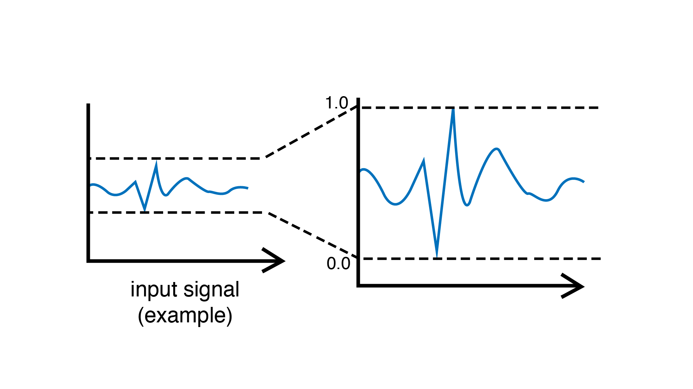

MinMaxScaler
This filtering unit regularizes incoming signals by remapping them into a new interval of [0, 1]. It does so by keeping track of the minimum and the maximum values ever taken by the signal and rescales it such that the minimum value of the signal is mapped to 0 and the maximum value is mapped to 1.
In order to accommodate signals that might be changing through time, the user can specify a “decay time window” to control the rate of decay of the minimum and maximum boundaries. The principle is similar to the how the Smoother and the Normalizer make use of exponential moving average.
Caution
This filtering unit works well as long as there are no “outliers” in the signal (ie. extreme values) that appear in rare conditions. Such values will replace the minimum or maximum value and greatly restrict the spread of the filtered values.
There are three ways to prevent this:
Specifying a decay window using the
time(decayTime)function.Smoothing incoming values using the
smooth()method or a Smoother unit before sending to theMinMaxScaler.Using a regularization unit that is less prone to outliers such as the Normalizer.
Example
Reacts to high input values by activating an output LED. Scaler is used to automatically adapt to incoming sensor values.
#include <Plaquette.h>
AnalogIn sensor(A0);
MinMaxScaler scaler;
DigitalOut led(13);
void begin() {}
void step() {
// Rescale value.
sensor >> scaler;
// Light led on threshold of 80%.
(scaler > 0.8) >> led;
}
Reference
-
class MinMaxScaler : public MovingFilter
Regularizes signal into [0,1] by rescaling it using the min and max values.
Public Functions
-
MinMaxScaler(Engine &engine = Engine::primary())
Default constructor.
Assigns infinite time window.
- Parameters
engine – the engine running this unit
-
MinMaxScaler(float timeWindow, Engine &engine = Engine::primary())
Constructor with time window.
- Parameters
timeWindow – the time window (in seconds)
engine – the engine running this unit
-
inline float minValue() const
Returns the current min. value.
-
inline float maxValue() const
Returns the current max. value.
-
virtual void infiniteTimeWindow()
Sets time window to infinite.
-
virtual void timeWindow(float seconds)
Changes the time window (expressed in seconds).
-
virtual float timeWindow() const
Returns the time window (expressed in seconds).
-
virtual bool timeWindowIsInfinite() const
Returns true if time window is infinite.
-
virtual void reset()
Resets the moving filter.
-
virtual float put(float value)
Pushes value into the unit.
If isRunning() is false the filter will not be updated but will just return the filtered value.
- Parameters
value – the value sent to the unit
- Returns
the new value of the unit
-
virtual void cutoff(float hz)
Changes the time window cutoff frequency (expressed in Hz).
-
virtual float cutoff() const
Returns the time window cutoff frequency (expressed in Hz).
-
virtual void resumeCalibrating()
Switches to calibration mode (default).
Calls to put(value) will return filtered value AND update the normalization statistics.
-
virtual void pauseCalibrating()
Switches to non-calibration mode: calls to put(value) will return filtered value without updating the normalization statistics.
-
virtual void toggleCalibrating()
Toggles calibration mode.
-
virtual bool isCalibrating() const
Returns true iff the moving filter is in calibration mode.
-
inline virtual float get()
Returns value in [0, 1].
-
inline virtual float mapTo(float toLow, float toHigh)
Maps value to new range.
-
inline float seconds() const
Returns engine time in seconds.
-
inline uint32_t milliSeconds() const
Returns engine time in milliseconds.
-
inline uint64_t microSeconds() const
Returns engine time in microseconds.
-
inline unsigned long nSteps() const
Returns number of engine steps.
-
inline float sampleRate() const
Returns engine sample rate.
-
inline float samplePeriod() const
Returns enginesample period.
-
inline operator float()
Object can be used directly to access its value.
-
inline explicit operator bool()
Operator that allows usage in conditional expressions.
-
MinMaxScaler(Engine &engine = Engine::primary())